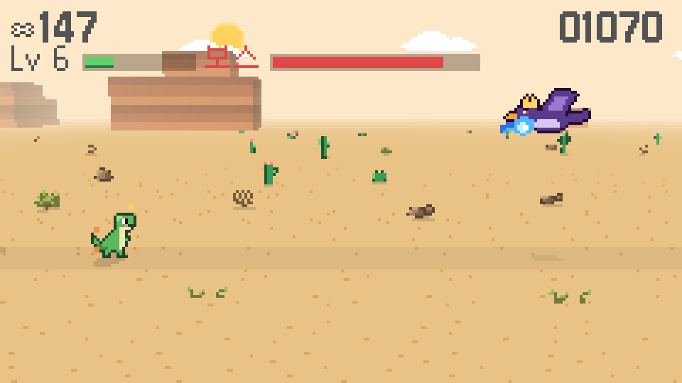
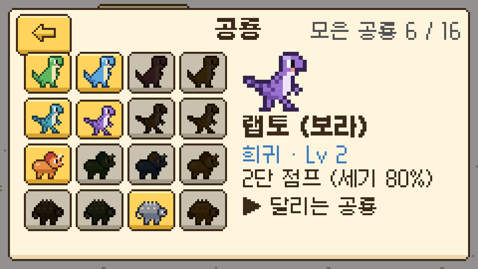
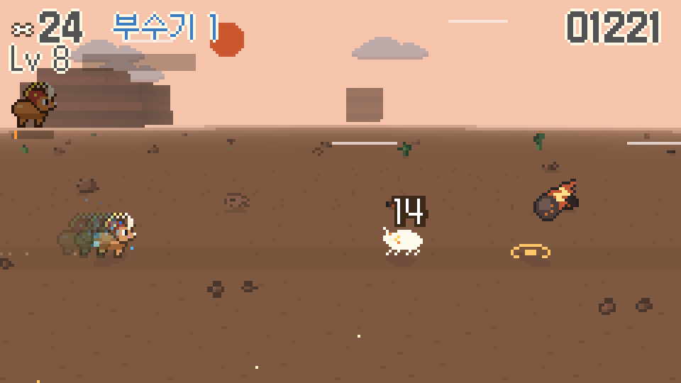
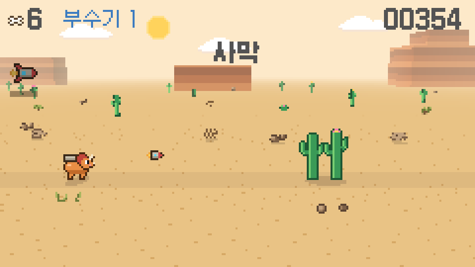
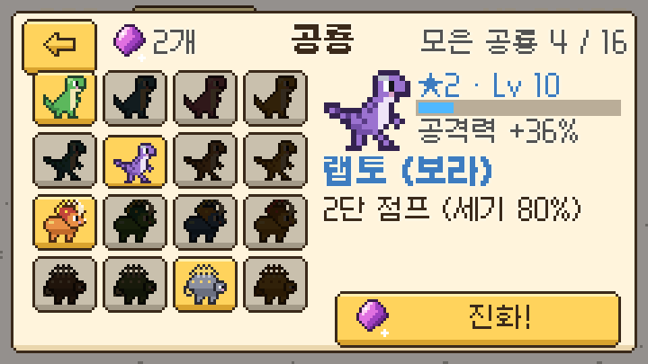
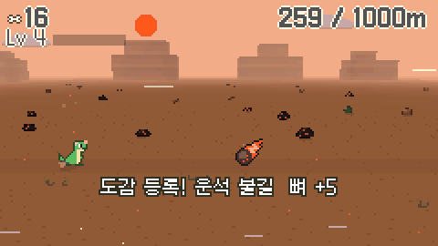

픽셀런 다이노
인터넷이 끊기면 나오는 그 공룡 게임을 16x16 도트로 다시 만들었어요. 조작은 점프 · 숙이기 두 가지뿐이고, 공격은 공룡이 알아서 해요.

휴대폰에서는 가로로 돌리고 전체 화면으로 하는 게 가장 편해요.
조작
| 점프 | 화면 오른쪽 탭 · 스페이스 · ↑ 길게 누르면 높이 뛰어요 |
|---|---|
| 숙이기 | 화면 왼쪽 누르고 있기 · ↓ 공중에서 누르면 빨리 내려와요 |
| 일시정지 | 오른쪽 위 버튼 · Esc |
게임 정보
| 장르 | 엔드리스 러너 + 자동 전투 · 수집 · 성장 |
|---|---|
| 콘텐츠 | 공룡 8종 (색깔 · 진화까지 32가지), 적 20종, 무기 · 장비, 모험 모드 4월드 20스테이지 |
| 만든 도구 | Godot 4 · 240x135 도트 화면 |
| 상태 | 웹 공개 · 안드로이드 출시 준비 중 |
기획 포인트
모든 기능은 아래 다섯 가지 재미 중 하나 이상을 강하게 만들어야 한다는 기준으로 넣고 뺐어요.
1 · 익숙한 재미
누구나 바로 아는 점프 · 숙이기 두 동작
2 · 모으는 재미
생김새와 능력이 다른 공룡을 하나씩 모으기
3 · 성장하는 재미
모은 뼈로 강해져서 더 멀리 가기
4 · 새로운 재미
지역마다 새 장애물 · 적 · 돌발 이벤트
5 · 도트의 매력
16x16 안에 담은 표정과 움직임
핵심 루프
공룡 고르기→
달리기→
꽈당→
보상→
강화 · 해금↺
한 판은 1~3분. 꽈당하면 바로 다시 달릴 수 있게 하고, 긴 루프(뼈 → 강화 · 새 공룡 → 더 멀리)로 다음 판을 하고 싶게 만들었어요.
"점프만 하면 공룡이 알아서 싸운다"
조작은 늘리지 않고, 공격은 자동으로. 앞에 나온 적을 공룡이 알아서 쏘고, 판 안에서 레벨이 올라 무기가 점점 화려해져요. 멀리 갈수록 적이 단단해지고 1000m마다 보스가 나와서, 판 안 성장과 판 밖 강화가 곧 기록이 돼요.
조작을 단순하게 지키는 원칙
- 화면에 따로 버튼을 두지 않고, 손가락이 닿는 곳은 왼쪽 · 오른쪽 두 곳뿐
- 스와이프는 쓰지 않음 — 빠른 속도에서 인식이 늦어 억울한 꽈당이 생기기 쉬워서
- 착지 직전에 누른 점프도 0.12초 기억했다가 착지하자마자 뛰게 해서, 터치가 늦게 느껴지지 않게
- 조작 안내는 엄지가 실제로 닿는 화면 아래 모래 자리에
만든 과정
기획서를 먼저 쓰고, 해 보고, 고치는 것을 반복했어요. 기획서 버전마다 무엇을 바꿨는지 남겨 두었어요.
- v0.1–0.6원작 공룡 게임을 모티브로 초안 · 이름 · 가로 화면 · 화면 나누기 조작 확정, 첫 프로토타입. 캐릭터가 더 가깝게 보이도록 화면을 320x180 → 240x135로
- v0.7–0.8재미 다듬기: 아슬아슬하게 피했을 때의 손맛, 판정 기준 조정
- v0.9–0.11성장 · 보상: 뼈 · 알 부화 · 공룡 수집 · 강화 · 무료 선물 · 일일 미션, 공룡에 다는 장비
- v0.12–0.13자동 전투 · 판 안 레벨업, 퀘스트 · 도감, 속도감 · 타격감
- v0.14–0.15반복이 지루해지지 않게: 지역 · 돌발 이벤트 · 공룡 진화, 모험 모드 20스테이지로 볼륨 확장
- v1.0–1.2출시 준비: 설정 · 일시정지 · 뒤로 가기, 영어판(번역 432개), 무료 출시로 결정
스크린샷




